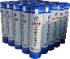

当前位置：
当前位置：
产品概述
塑性体（APP）改性沥青防水卷材是以聚酯毡、玻纤毡、玻纤增强聚酯 毡为胎基，以无规聚丙烯（APP）或聚烯烃类聚合物（APAO、APO等） 改性沥青做浸渍和涂盖材料，两面覆以隔离材料所制成的防水卷材。

产品特性
● 抗拉强度高，耐水压、延伸率大，抗穿刺性能好、耐疲劳、尺寸稳定性好、超强耐老化。
● 耐化学腐蚀、耐霉菌、耐侯性好。
● 优良的耐高低温性能，冷热地区均适用，尤其适用于寒冷地区。
● 施工性能好，热熔法粘结，一年四季均可施工，且热接缝可靠耐久。
执行标准
GB18243-2008 塑性体改性沥青防水卷材
| 序号 | 检测项目 | 指标 | |||||
|---|---|---|---|---|---|---|---|
| I | II | ||||||
| PY | G | PY | G | PYG | |||
| 1 | 可溶物含量，g/m2 ≥ | 3mm | 2100 | - | |||
| 4mm | 2900 | - | |||||
| 5mm | 3500 | - | |||||
| 试验现象 | - | 胎基不燃 | - | 胎基不燃 | - | ||
| 2 | 耐热性 | ℃ | 110 | 130 | |||
| ≤mm | 2 | ||||||
| 实验现象 | 无流淌、滴落 | ||||||
| 3 | 低温柔性：℃ | -7 | -15 | ||||
| 4 | 不透水性：30min | 0.3MPa | 0.2MPa | 0.3MPa | |||
应用领域
适合于各种建筑物的屋面、地下、桥梁、涵洞的防水、防渗工程。